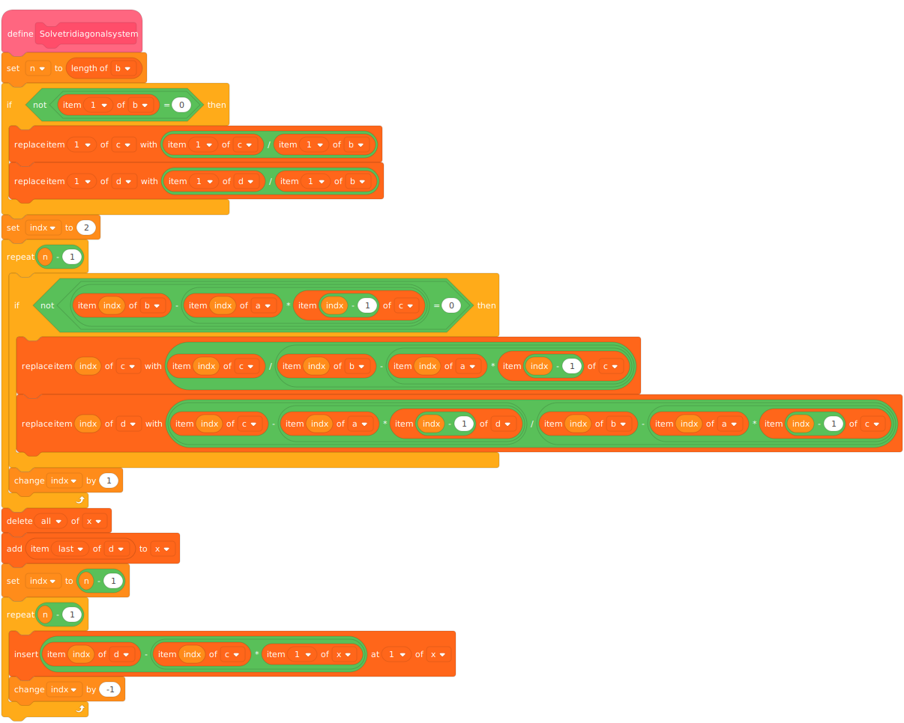

Thomas Algorithm
As alluded to in the Gaussian Elimination chapter, the Thomas Algorithm (or TDMA, Tri-Diagonal Matrix Algorithm) allows for programmers to massively cut the computational cost of their code from to in certain cases! This is done by exploiting a particular case of Gaussian Elimination where the matrix looks like this:
This matrix shape is called Tri-Diagonal (excluding the right-hand side of our system of equations, of course!). Now, at first, it might not be obvious how this helps. Well, firstly, it makes the system easier to encode: we may divide it into four separate vectors corresponding to , , , and (in some implementations, you will see the missing and set to zero to get four vectors of the same size). Secondly, and most importantly, equations this short and regular are easy to solve analytically.
We'll start by applying mechanisms familiar to those who have read the Gaussian Elimination chapter. Our first goal is to eliminate the terms and set the diagonal values to . The and terms will be transformed into and . The first row is particularly easy to transform since there is no , we simply need to divide the row by :
Let's assume that we found a way to transform the first rows. How would we transform the next one? We have
Let's transform row in two steps.
Step one: eliminate with the transformation :
Step two: get with the transformation :
Brilliant! With the last two formula, we can calculate all the and in a single pass, starting from row , since we already know the values of and .
Of course, what we really need are the solutions . It's back substitution time!
If we express our system in terms of equations instead of a matrix, we get
plus the last row that is even simpler: . One solution for free! Maybe we can backtrack from the last solution? Let's (barely) transform the above equation:
and that's all there is to it. We can calculate all the in a single pass starting from the end.
Overall, we only need two passes, and that's why our algorithm is ! The transformations are quite easy too, isn't that neat?
Example Code
function thomas(a::Vector{Float64}, b::Vector{Float64}, c::Vector{Float64},
d::Vector{Float64}, n::Int64)
x = copy(d)
c_prime = copy(c)
# Setting initial elements
c_prime[1] /= b[1]
x[1] /= b[1]
for i = 2:n
# Scale factor is for c_prime and x
scale = 1.0 / (b[i] - c_prime[i-1]*a[i])
c_prime[i] *= scale
x[i] = (x[i] - a[i] * x[i-1]) * scale
end
# Back-substitution
for i = n-1:-1:1
x[i] -= (c_prime[i] * x[i+1])
end
return x
end
function main()
a = [0.0, 2.0, 3.0]
b = [1.0, 3.0, 6.0]
c = [4.0, 5.0, 0.0]
d = [7.0, 5.0, 3.0]
println(
"""The system
$(join((b[1], c[1], "", "|", d[1]), "\t"))
$(join((a[2], b[2], c[2], "|", d[2]), "\t"))
$(join(("", a[3], b[3], "|", d[3]), "\t"))
Has the solution:"""
)
soln = thomas(a, b, c, d, 3)
println(soln)
end
main()
#include <stdio.h>
#include <string.h>
void thomas(double * const a, double * const b, double * const c,
double * const x, const size_t size) {
double y[size];
memset(y, 0, size * sizeof(double));
y[0] = c[0] / b[0];
x[0] = x[0] / b[0];
for (size_t i = 1; i < size; ++i) {
double scale = 1.0 / (b[i] - a[i] * y[i - 1]);
y[i] = c[i] * scale;
x[i] = (x[i] - a[i] * x[i - 1]) * scale;
}
for (int i = size - 2; i >= 0; --i) {
x[i] -= y[i] * x[i + 1];
}
}
int main() {
double a[] = {0.0, 2.0, 3.0};
double b[] = {1.0, 3.0, 6.0};
double c[] = {4.0, 5.0, 0.0};
double x[] = {7.0, 5.0, 3.0};
printf("The system,\n");
printf("[1.0 4.0 0.0][x] = [7.0]\n");
printf("[2.0 3.0 5.0][y] = [5.0]\n");
printf("[0.0 3.0 6.0][z] = [3.0]\n");
printf("has the solution:\n");
thomas(a, b, c, x, 3);
for (size_t i = 0; i < 3; ++i) {
printf("[%f]\n", x[i]);
}
return 0;
}
# Author: gammison
# note this example is inplace and destructive
def thomas(a, b, c, d):
# set the initial elements
c[0] = c[0] / b[0]
d[0] = d[0] / b[0]
n = len(d) # number of equations to solve
for i in range(1, n):
# scale factor for c and d
scale = 1 / (b[i] - c[i-1] * a[i])
c[i] *= scale
d[i] = (d[i] - a[i] * d[i-1]) * scale
# do the back substitution
for i in range(n-2, -1, -1):
d[i] -= c[i] * d[i+1]
return d
def main():
# example for matrix
# [1 4 0][x] [7]
# [2 3 5][y] = [5]
# [0 3 6][z] [3]
# [.8666]
# soln will equal [1.533]
# [-.266]
# note we index a from 1 and c from 0
a = [0, 2, 3]
b = [1, 3, 6]
c = [4, 5, 0]
d = [7, 5, 3]
soln = thomas(a, b, c, d)
print(soln)
if __name__ == '__main__':
main()
You will find this algorithm implemented in this project.

public class Thomas {
private static double[] thomasAlgorithm(double[] a, double[] b, double[] c, double[] x) {
int size = a.length;
double[] y = new double[size]; // This is needed so that we don't have to modify c
double[] solution = new double[size];
// Set initial elements
y[0] = c[0] / b[0];
solution[0] = x[0] / b[0];
for (int i = 1; i < size; ++i) {
// Scale factor is for c and x
double scale = 1.0 / (b[i] - a[i] * y[i - 1]);
y[i] = c[i] * scale;
solution[i] = (x[i] - a[i] * solution[i - 1]) * scale;
}
// Back-substitution
for (int i = size - 2; i >= 0; --i) {
solution[i] -= y[i] * solution[i + 1];
}
return solution;
}
public static void main(String[] args) {
double[] a = {0.0, 2.0, 3.0};
double[] b = {1.0, 3.0, 6.0};
double[] c = {4.0, 5.0, 0.0};
double[] x = {7.0, 5.0, 3.0};
double[] solution = thomasAlgorithm(a, b, c, x);
System.out.format("The system,\n");
System.out.format("[%.1f, %.1f, %.1f][x] = [%.1f]\n", b[0], c[0], 0f, x[0]);
System.out.format("[%.1f, %.1f, %.1f][y] = [%.1f]\n", a[1], b[1], c[1], x[1]);
System.out.format("[%.1f, %.1f, %.1f][z] = [%.1f]\n", 0f, a[2], b[2], x[2]);
System.out.format("has the solution:\n");
for (int i = 0; i < solution.length; i++) {
System.out.format("[% .5f]\n", solution[i]);
}
}
}
import Data.List (zip4)
import Data.Ratio
thomas :: Fractional a => [a] -> [a] -> [a] -> [a] -> [a]
thomas a b c = init . scanr back 0 . tail . scanl forward (0, 0) . zip4 a b c
where
forward (c', d') (a, b, c, d) =
let denominator = b - a * c'
in (c / denominator, (d - a * d') / denominator)
back (c, d) x = d - c * x
main :: IO ()
main = do
let a = [0, 2, 3] :: [Ratio Int]
b = [1, 3, 6]
c = [4, 5, 0]
d = [7, 5, 3]
print $ thomas a b c d
package main
import "fmt"
func thomas(a, b, c, d []float64) []float64 {
c[0] = c[0] / b[0]
d[0] = d[0] / b[0]
for i := 1; i < len(d); i++ {
scale := 1. / (b[i] - c[i-1]*a[i])
c[i] *= scale
d[i] = (d[i] - a[i]*d[i-1]) * scale
}
for i := len(d) - 2; i >= 0; i-- {
d[i] -= c[i] * d[i+1]
}
return d
}
func main() {
a := []float64{0., 2., 3.}
b := []float64{1., 3., 6.}
c := []float64{4., 5., 0.}
d := []float64{7., 5., 3.}
fmt.Println("The system,")
fmt.Println("[1.0 4.0 0.0][x] = [7.0]")
fmt.Println("[2.0 3.0 5.0][y] = [5.0]")
fmt.Println("[0.0 3.0 6.0][z] = [3.0]")
fmt.Println("has the solution:")
solve := thomas(a, b, c, d)
for _, i := range solve {
fmt.Printf("[%f]\n", i)
}
}
func thomas(a: [Double], b: [Double], c: [Double], d: [Double]) -> [Double] {
var a = a
var b = b
var c = c
var d = d
// set the initial elements
c[0] = c[0] / b[0]
d[0] = d[0] / b[0]
let n = d.count // number of equations to solve
for i in 1..<n {
// scale factor for c and d
let scale = 1 / (b[i] - c[i-1] * a[i])
c[i] = c[i] * scale
d[i] = (d[i] - a[i] * d[i-1]) * scale
}
// do the back substitution
for i in stride(from: n-2, to: -1, by: -1) {
d[i] = d[i] - c[i] * d[i+1]
}
return d
}
func main() {
let a = [0.0, 2.0, 3.0]
let b = [1.0, 3.0, 6.0]
let c = [4.0, 5.0, 0.0]
let d = [7.0, 5.0, 3.0]
print(thomas(a: a, b: b, c: c, d: d))
}
main()
<?php
declare(strict_types=1);
function thomas_algorithm(array $a, array $b, array $c, array $x, int $size): array
{
$y = [];
$y[0] = $b[0] == 0 ? 0 : $c[0] / $b[0];
$x[0] = $b[0] == 0 ? 0 : $x[0] / $b[0];
for ($i = 1; $i < $size; ++$i) {
$scale = (float)(1 / ($b[$i] - $a[$i] * $y[$i - 1]));
$y[$i] = $c[$i] * $scale;
$x[$i] = ($x[$i] - $a[$i] * $x[$i - 1]) * $scale;
}
for ($i = $size - 2; $i >= 0; --$i)
$x[$i] -= $y[$i] & $x[$i + 1];
return $x;
}
$a = [0.0, 2.0, 3.0];
$b = [1.0, 3.0, 6.0];
$c = [4.0, 5.0, 0.0];
$x = [7.0, 5.0, 3.0];
printf('The system,%s', PHP_EOL);
printf(' [%s, %s, %s][x] = [%s]%s', $b[0], $c[0], 0, $x[0], PHP_EOL);
printf(' [%s, %s, %s][y] = [%s]%s', $a[1], $b[1], $c[1], $x[1], PHP_EOL);
printf(' [%s, %s, %s][z] = [%s]%s', 0, $a[2], $b[2], $x[2], PHP_EOL);
printf('has the solution:%s', PHP_EOL);
$solution = thomas_algorithm($a, $a, $c, $x, count($x));
for ($i = 0; $i < count($solution); $i++)
printf(' [%s]%s', $solution[$i], PHP_EOL);
proc thomas_algorithm(a, b, c_in, d_in: seq[float]): seq[float] =
let n: int = len(d_in)
var c: seq[float] = c_in
var d: seq[float] = d_in
c[0] /= b[0]
d[0] /= b[0]
for i in 1..n - 1:
let scale: float = (1 / (b[i] - c[i - 1] * a[i]))
c[i] *= scale
d[i] = (d[i] - a[i] * d[i - 1]) * scale
for i in countdown(n - 2,0):
d[i] -= c[i] * d[i + 1]
return d
const x: seq[float] = @[0.0, 2.0, 3.0]
const y: seq[float] = @[1.0, 3.0, 6.0]
const z: seq[float] = @[4.0, 5.0, 0.0]
const w: seq[float] = @[7.0, 5.0, 3.0]
echo "The system,"
echo "[1.0 4.0 0.0][x] = [7.0]"
echo "[2.0 3.0 5.0][y] = [5.0]"
echo "[0.0 3.0 6.0][z] = [3.0]"
echo "has the solution:"
const soln: seq[float] = thomas_algorithm(x, y, z, w)
for i in 0..len(w) - 1:
echo soln[i]
#include <iostream>
#include <vector>
#include <cstring>
void thomas(std::vector<double> const a, std::vector<double> const b, std::vector<double> const c, std::vector<double>& x) {
int size = a.size();
double y[size];
memset(y, 0, size * sizeof(double));
y[0] = c[0] / b[0];
x[0] = x[0] / b[0];
for (size_t i = 1; i < size; ++i) {
double scale = 1.0 / (b[i] - a[i] * y[i - 1]);
y[i] = c[i] * scale;
x[i] = (x[i] - a[i] * x[i - 1]) * scale;
}
for (int i = size - 2; i >= 0; --i) {
x[i] -= y[i] * x[i + 1];
}
}
int main() {
std::vector<double> a = {0.0, 2.0, 3.0};
std::vector<double> b = {1.0, 3.0, 6.0};
std::vector<double> c = {4.0, 5.0, 0.0};
std::vector<double> x = {7.0, 5.0, 3.0};
std::cout << "The system" << std::endl;
std::cout << "[1.0 4.0 0.0][x] = [7.0]" << std::endl;
std::cout << "[2.0 3.0 5.0][y] = [5.0]" << std::endl;
std::cout << "[0.0 3.0 6.0][z] = [3.0]" << std::endl;
std::cout << "has the solution" << std::endl;
thomas(a, b, c, x);
for (size_t i = 0; i < 3; ++i) {
std::cout << "[" << x[i] << "]" << std::endl;
}
return 0;
}
function thomas(a, b, c, d)
-- Create tables and set initial elements
local c_prime = {c[1] / b[1]}
local result = {d[1] / b[1]}
for i = 2, #a do
-- Scale factor is for c_prime and result
local scale = 1.0 / (b[i] - a[i] * c_prime[i - 1])
c_prime[i] = c[i] * scale
result[i] = (d[i] - a[i] * result[i - 1]) * scale
end
-- Back-substitution
for i = #a-1, 1, -1 do
result[i] = result[i] - (c_prime[i] * result [i + 1])
end
return result
end
local a = {0.0, 2.0, 3.0}
local b = {1.0, 3.0, 6.0}
local c = {4.0, 5.0, 0.0}
local d = {7.0, 5.0, 3.0}
print("The system")
print(b[1], c[1], "", "|", d[1])
print(a[2], b[2], c[2], "|", d[2])
print("", a[3], b[3], "|", d[3])
print("Has the solution:")
local solution = thomas(a, b, c, d)
print(table.unpack(solution))
def thomas(a, b, c, d)
c_prime = c.dup
x = d.dup
# Setting initial elements
c_prime[0] /= b[0]
x[0] /= b[0]
1.upto(a.size - 1) do |i|
# Scale factor is for c_prime and x
scale = 1.0 / (b[i] - c_prime[i - 1]*a[i])
c_prime[i] *= scale
x[i] = (x[i] - a[i] * x[i - 1]) * scale
end
# Back-substitution
(a.size - 2).downto(0) do |i|
x[i] -= (c_prime[i] * x[i + 1])
end
x
end
def main
a = [0.0, 2.0, 3.0]
b = [1.0, 3.0, 6.0]
c = [4.0, 5.0, 0.0]
d = [7.0, 5.0, 3.0]
puts "The system"
puts [b[0], c[0], "", "|", d[0]].join("\t")
puts [a[1], b[1], c[1], "|", d[1]].join("\t")
puts ["", a[2], b[2], "|", d[2]].join("\t")
puts "Has the solution:"
soln = thomas(a, b, c, d)
puts soln.join("\t")
end
main
private fun thomas(a: DoubleArray, b: DoubleArray, c: DoubleArray, d: DoubleArray): DoubleArray {
val cPrime = c.clone()
val x = d.clone()
val size = a.size
cPrime[0] /= b[0]
x[0] /= b[0]
for (i in 1 until size) {
val scale = 1.0 / (b[i] - cPrime[i - 1] * a[i])
cPrime[i] *= scale
x[i] = (x[i] - a[i] * x[i - 1]) * scale
}
for (i in (size - 2) downTo 0) {
x[i] -= cPrime[i] * x[i + 1]
}
return x
}
fun main(args: Array<String>) {
val a = doubleArrayOf(0.0, 2.0, 3.0)
val b = doubleArrayOf(1.0, 3.0, 6.0)
val c = doubleArrayOf(4.0, 5.0, 0.0)
val x = doubleArrayOf(7.0, 5.0, 3.0)
val solution = thomas(a, b, c, x)
println("System:")
println("[%.1f, %.1f, %.1f][x] = [%.1f]".format(b[0], c[0], 0f, x[0]))
println("[%.1f, %.1f, %.1f][y] = [%.1f]".format(a[1], b[1], c[1], x[1]))
println("[%.1f, %.1f, %.1f][z] = [%.1f]\n".format(0f, a[2], b[2], x[2]))
println("Solution:")
for (i in solution.indices) {
println("[% .5f]".format(solution[i]))
}
}